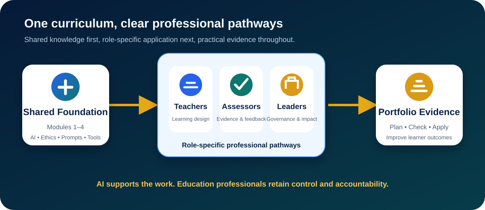
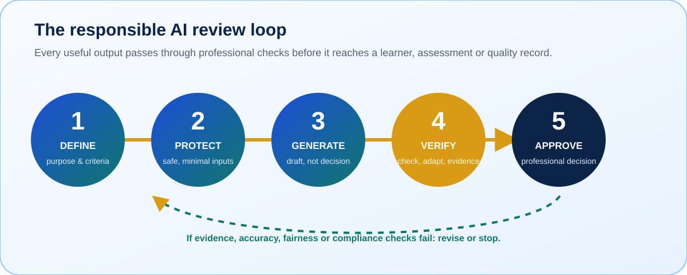

Approved awarding body recognition
HHF Training CPD programmes are accredited through an approved UK awarding body, giving the training stronger credibility for organisations and staff teams.
A comprehensive, role-relevant curriculum helping teachers, assessors and IQAs use AI responsibly, improve learning and assessment, reduce administration and protect professional judgement.
This gives organisations extra confidence that HHF Training CPD is structured, professionally designed and suitable for staff development records.
HHF Training CPD programmes are accredited through an approved UK awarding body, giving the training stronger credibility for organisations and staff teams.
Accredited CPD helps schools, colleges and providers evidence professional learning, support internal CPD logs and show commitment to responsible AI capability.
The programme is designed around clear learning aims, practical outcomes and education-relevant content rather than informal awareness alone.
The training can be adapted for beginners, experienced staff, leaders, assessors, IQAs and teams that need a shared organisational approach to AI.
Understand how AI can support planning, explanations, resources, differentiation, feedback preparation and administrative workload without replacing professional judgement.
Develop confidence around AI adoption, staff guidance, risk management, policy expectations, safeguarding considerations and responsible implementation.
Explore AI risks in learner evidence, authenticity, professional discussion, observation, mapping, feedback and internal quality assurance.
Review how AI affects schemes of work, learning activities, independent study, digital skills and learner employability.
Use AI to improve everyday productivity, communication, document drafting, learner support and safer digital practice.
Strengthen staff CPD, assessment design, evidence tracking, quality assurance and learner guidance in the AI era.
Many teams know AI matters, but they need practical answers. This page is designed to make the offer easy to understand before an organisation makes contact.
Many educators have heard about AI tools but are unsure what is useful, what is risky and what is appropriate in education.
Teams need consistent guidance on acceptable AI use, independent work, evidence, authenticity and academic integrity.
AI can create new risks for written work, portfolios and assignments. Staff need practical ways to design more authentic assessment.
Even where AI policies exist, staff often need examples, scenarios and shared language to apply them confidently.
The curriculum progresses from essential AI understanding to role-specific teaching, assessment, quality assurance and organisational implementation. Participants build practical evidence throughout rather than learning tools in isolation.

Essential knowledge, responsible practice, prompt design and critical tool evaluation for every participant.
Teaching, learner support, assessment, vocational practice, FE/HE applications and quality assurance.
Advanced assistants, governance, adoption, impact measurement and organisational implementation.
Showing all 12 modules.
Understand how modern AI works, where it helps and where professional checking is essential.
Establish accurate shared language and the confidence to evaluate AI outputs without accepting them at face value.
Apply responsible AI principles to learner data, safeguarding, fairness and educational decisions.
Recognise legal, ethical and safeguarding risks before using AI with educational information or learner-facing activity.
Create reusable, structured instructions that produce relevant and reviewable outputs.
Move beyond simple questions towards controlled prompts with context, criteria, constraints and visible quality checks.
Select tools by educational need, information risk, accessibility and evidence quality.
Build transferable selection skills while treating current platforms as examples rather than permanent dependencies.
Support constructive alignment, sequencing, lesson planning and resource development.
Improve planning efficiency while keeping curriculum intent, subject expertise and pedagogical judgement with the educator.
Improve access, differentiation and independence without automating sensitive support decisions.
Broaden access and create adaptable support while respecting SEND expertise, reasonable adjustments and wellbeing boundaries.
Design valid assessment that protects authenticity and responds proportionately to AI.
Strengthen assessment through authentic design, clear AI expectations and multiple sources of evidence rather than relying on detection.
Support evidence review, questioning, feedback and progress monitoring while preserving judgement.
Reduce repetitive administration and strengthen consistency without delegating assessment decisions to an AI system.
Apply AI to occupational learning, workplace evidence, employer engagement and EPA readiness.
Connect AI literacy with occupational competence without confusing generated explanation with demonstrated skill.
Support research, academic learning, tutorials and student independence with transparent AI use.
Guide students towards critical, attributable and independent academic practice rather than outsourced thinking or writing.
Strengthen standardisation, IQA, documentation and improvement with auditable oversight.
Improve consistency and efficiency while maintaining reliable records, role separation and accountable quality decisions.
Develop governed assistants, workflows, strategy and sustainable responsible adoption.
Move from isolated experimentation to controlled, measurable and maintainable organisational practice.
These visual examples connect the modules to real educational planning, activity design, assessment and professional control.


Participants progress from understanding AI to applying it safely in their own role, with visible evidence of quality, compliance and professional review.

The curriculum prioritises educational purpose, evidence, critical checking, data awareness and professional accountability over dependence on any one platform.
Each module contributes to a role-relevant portfolio demonstrating responsible application, critical review and measurable workplace value.
A mapped plan showing alignment, appropriate AI support and professional changes.
An annotated output demonstrating fact-checking, source verification, bias review and judgement.
Role-specific templates with inputs, output criteria, limitations and quality notes.
A practical assessment covering data, safeguarding, ethics, accessibility and approval.
An inclusive resource, feedback example, evidence tracker or quality record.
A prioritised action plan with ownership, success measures, review points and boundaries.
The curriculum connects responsible AI practice to real educational work, helping staff prepare more effectively, respond to learner needs and reduce repetitive administration while retaining professional judgement.
Develop lesson structures, learning activities, retrieval tasks and knowledge checks aligned to approved curriculum outcomes.
Create alternative explanations, scaffolds, examples and extension activities for learners with different starting points.
Prepare clearer layouts, visual sequences, plain-language versions and accessible formats for professional review and authorised support.
Map outcomes, teaching activities and assessment evidence so gaps, duplication and progression are easier to identify.
Create question banks, authentic tasks and rubric drafts that assess genuine understanding and occupational competence.
Structure constructive, criteria-linked feedback drafts while teachers and assessors retain responsibility for every judgement.
Create scenarios, presentations, worksheets and discussion prompts adapted to the subject, level and learner group.
Support meeting summaries, action plans, evidence trackers and quality records using approved information and human checking.
Help learners verify information, declare appropriate AI use and prepare for responsible work in AI-enabled industries.
HHF Training keeps the process simple, structured and focused on what your organisation needs.
Discuss your setting, staff groups, priorities, concerns and intended professional outcomes.
Identify confidence levels, AI risks, policy gaps, assessment concerns and practical training needs.
Select the shared, teacher, assessor, IQA and leadership modules relevant to each role.
Apply the curriculum to real educational tasks with examples, controls and professional review.
Review portfolio evidence, workplace actions and measures of quality, efficiency and learner benefit.
These FAQs are written for decision-makers who need to understand whether the training is suitable for their staff.
Yes. The training can start from the basics and explain AI in plain language. Staff do not need technical knowledge or previous experience with AI tools.
Yes. Module emphasis, examples, risks, portfolio tasks and professional pathways can reflect your vocational, FE or HE context and staff responsibilities.
Yes. Assessment authenticity, AI-generated work, learner evidence, professional discussion and AI-resilient assessment practice can all be included.
Yes. Module 12 provides an optional pathway for curriculum leads, quality leads, managers and senior leaders responsible for strategy, governance and implementation.
Yes. The curriculum builds a role-relevant portfolio including a plan, evaluated AI output, prompt templates, risk record, professional resource and implementation plan.
No. Teachers, assessors, IQAs and leaders remain responsible for educational, assessment, safeguarding, quality and compliance decisions.
Speak with HHF Training about AI training, cyber safety, CPD, assessment design, quality assurance or digital transformation support.